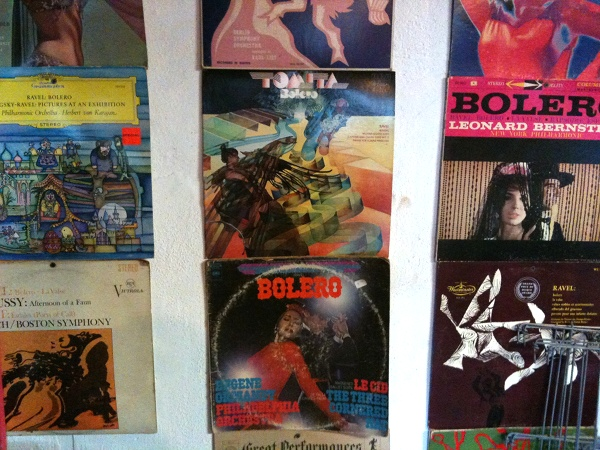

The Bolero Club is Providence's only amateur folk classical musical ensemble whose sole focus and purpose is the study and performance of Maurice Ravel's Bolero.
The Bolero Club record collection is growing all the time! At latest count we have over 60 copies of Bolero, almost all of which are unique recordings. The entire collection is on display in my studio. I should put a list up here someday.
If you have a copy of Bolero, or if you ever see a copy of Bolero at a yard sale, why not pick it up and donate it to the collection?
Our last (and first) public show was on September 22nd, 1995 at AS220.
The Bolero Club Orchestra is:
- Chris Adams: sousaphone/trombone
- Heather Ahern: french horn
- Joe Auger: snare drum
- Susan Clausen: banjo
- Jill Colinan: trumpet
- Umberto Crenca: flute
- Hugh Everett: flute
- Matthew Everett: bouzouki
- Char Getty: fiddle
- Gerry Heroux: french horn
- Pam Murray: trombone
- Denise Tetreault: mandolin/fiddle
- Shawn Wallace: cornet